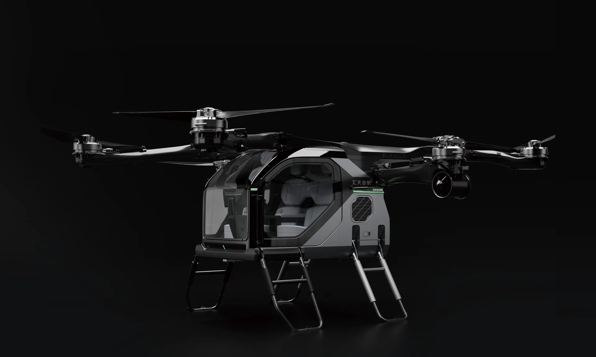
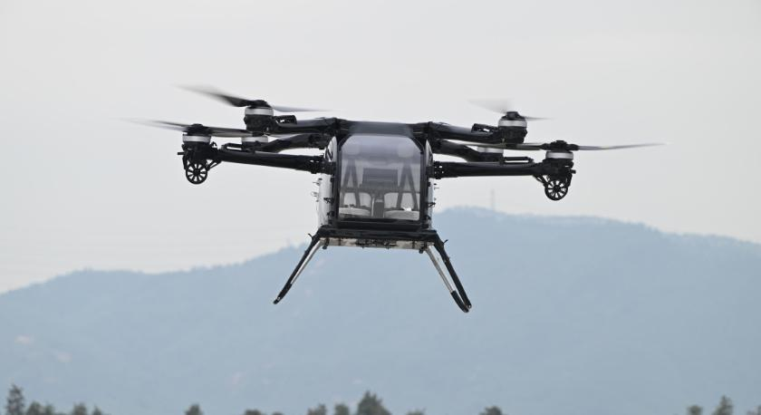
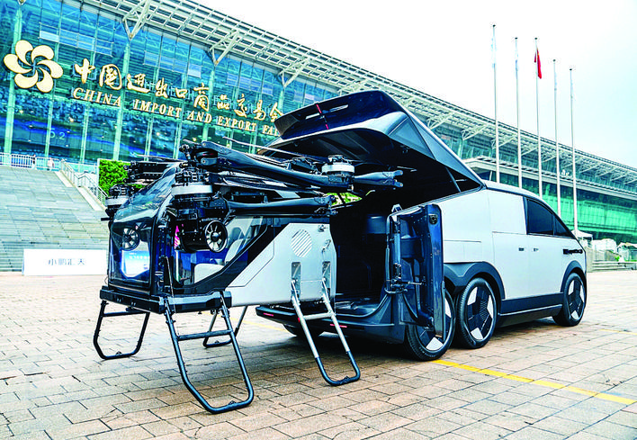
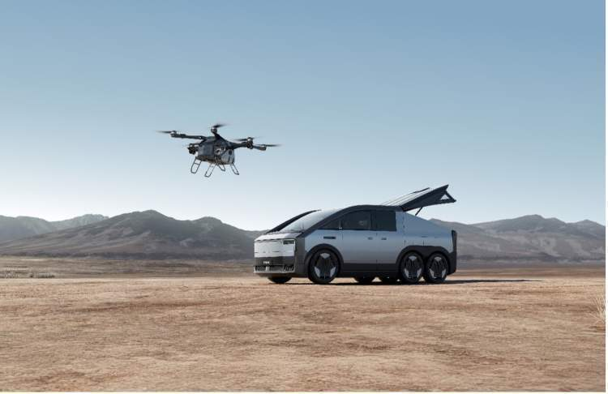

沿系统安全工程（System Safety Engineering）流程，对分体式飞行汽车的陆行平台、飞行平台、自动分合机构、车载补能链路与运行环境进行危险源辨识、故障模式分析、冗余与可靠性评估、功能安全 / SOTIF / 适航框架对照、风险分级与场景安全推演，并明确区分已披露设计、待验证证据与尚未成立的安全结论。
安全分析的对象不是"飞机看起来安不安全"，而是：在哪些失效与误用条件下会出现何种危险、现有设计与规程能否把风险降到可接受水平、这些结论有没有可追溯的试验与审定证据。本报告对陆地航母按系统安全工程流程逐层拆解，结论按证据强度分为三档。
本次安全分析延续作业一的产品界定：陆行体（Mothership，三轴六轮 6×6 增程式电动车）与飞行体（Air Module，六旋翼双涵道双座 eVTOL）通过车载自动分合机构结合，陆行体同时承担运载、存放与车载补能角色。同厂全倾转混动机型 A868 不属于本分析对象，其规格与安全问题不并入本报告[5]。
已演示：有公开飞行、载人飞行、多机试飞或试产下线记录可支持；待验证：披露了设计目标或冗余架构，但缺少试验报告、审定数据或第三方核验；未成立：未见公开证据支持其已具备相应安全能力或许可。企业宣传口径不直接计入安全证据。
方法上依次采用：系统边界定义 → 危险源辨识（HAZID）→ 故障模式与影响分析（FMEA）→ 冗余与可靠性梳理 → 标准 / 适航框架对照 → 严重度-可能性风险分级 → 场景化推演 → 安全案例与残余风险说明。
系统安全工程不是开发末端追加的一次安全测试，而是从概念阶段贯穿到运行与退役的连续过程。下图把通用安全生命周期映射到本案例；每个环节都应留下可追溯的安全需求、分析记录与验证证据。
界定陆 / 空模块功能、任务剖面与运行环境，划定安全边界
辨识失效、故障、误用与外部威胁对应的危险源
按严重度与可能性分级，确定不可接受 / ALARP / 可接受区间
把风险结论转成架构、冗余、程序与场地层面的安全需求
分配单点失效容忍、通道独立性与故障降级策略
仿真、台架、故障注入、试飞与审定试验，复核安全需求闭环
运行监控、事件报告、维护周转、变更管理与残余风险跟踪
对照本案例：STEP 1–2 可由公开产品资料与场景描述重建；STEP 3–4 的风险数值与安全需求分配未见公开文件；STEP 5 有冗余设计披露；STEP 6 的试验与审定证据大部分未公开；STEP 7 取决于尚未取得的 AC / OC 与运营体系。
危险源辨识覆盖推进、控制、能源、结构与机构、人员与地面、环境外部、人为差错与网络信息安全八个方向。下表只列危险与触发条件，严重度与可能性在第 08 节矩阵中分级。
| 风险域 | 危险源 / 触发条件 | 可能后果 | 涉及模块 | 证据状态 |
|---|---|---|---|---|
| 动力与推进 | 单 / 多电机或旋翼失效、桨叶断裂脱落、涵道异物吸入、推力不对称 | 姿态偏移、失控、迫降或坠机 | 飞行体推进系统 | 待验证 |
| 飞行控制 | 主控失效、传感器冲突 / 漂移、通信丢失、非预期动作或模式切换 | 错误指令、姿态失控、误动作 | 飞控与感知系统 | 待验证 |
| 能源系统 | 电池单体失效、热失控、过充过放、低温衰减、充电故障、高压短路 | 断电、起火、爆炸、飞行中动力丧失 | 飞行体电池 / 车载补能 | 证据不足 |
| 结构与机构 | 折叠机臂展开锁定失效、分合机构锁止失效 / 对接错位 / 行驶中误释放、振动疲劳 | 结构失效、飞行体脱落、夹伤 | 机体结构 / 分合机构 | 待验证 |
| 陆行平台 | 车辆碰撞、制动失效、底盘 / 轮胎故障、车载电池与电气故障 | 地面交通事故、连带损伤飞行体 | 陆行体底盘与动力 | 待核验 |
| 人员与地面安全 | 地面人员侵入旋翼 / 涵道区、降落冲击、起降点杂物、观众隔离不足 | 地面人员伤害、物体打击 | 场地与运行程序 | 待验证 |
| 环境与外部 | 阵风、低能见度、降水、结冰、鸟击、起降场地不平、电磁干扰 | 偏离航线、迫降、结构损伤 | 飞行体 / 运行环境 | 待验证 |
| 人为差错 | 模式误解、误操纵、监控疏忽、培训不足、疲劳、应急处置错误 | 错误动作、处置不当放大事故 | 乘员 / 驾驶员 / 运营人 | 待验证 |
| 网络与数据 | 非授权接入、固件 / 软件篡改、通信劫持、运行数据泄露 | 失控风险、隐私与合规问题 | 车 / 飞控电子系统 | 未见证据 |
| 运行与监管 | 空域未批准、起降场地不合规、人员资质不符、跨境型号认可缺失 | 非法运行、事故责任不清 | 运营体系 / 监管身份 | 未成立 |
| 噪声与社区 | 起降脉冲噪声、频谱与频次暴露、夜间运行 | 社区抵触、社会许可受限 | 运行环境 | 研究层面 |
| 维护与变更 | 机构 / 电池维护不当、维修误操作、软件版本变更未回归验证 | 隐患累积、重复故障 | 全寿命周期体系 | 未见证据 |
下表按子系统列出典型故障模式、局部与高层影响、已披露的补偿设计、验证证据状态与残余风险判断。表中"补偿设计"来自官方披露层面；公开材料未给出失效概率、检测率与风险优先数（RPN），因此本报告不编造量化分值，只做定性残余风险判断。
| 子系统 | 故障模式 | 影响（局部 → 整车） | 现有补偿设计（披露） | 验证证据状态 | 残余风险判断 |
|---|---|---|---|---|---|
| 旋翼 / 电机 | 单桨或单电机失效、推力不对称 | 单路推力损失 → 姿态偏移，需剩余推力重分配维持可控 | 六旋翼分布式布置，多电机冗余；披露关键系统冗余备份[1] | 故障注入试验、重构包线未公开 | 待验证 |
| 桨叶 / 涵道 | 桨叶断裂脱落、涵道异物吸入 | 剧烈振动与推力损失 → 失控风险 | 碳纤维桨叶与涵道构型；单点失效安全目标 | 桨叶失效 / 异物撞击试验未公开 | 待验证 |
| 飞控系统 | 主控失效、传感器冲突、表决错误 | 错误姿态指令 → 失控或非预期动作 | 披露飞控冗余、双模式操纵与融合感知辅助[1] | 冗余通道独立性等级、硬件在环与表决试验未公开 | 待验证 |
| 供电 / 电池 | 单体失效、热失控、过充过放、高压短路 | 局部断电 / 起火 → 动力丧失、火灾 | 全域 800V 高压平台；披露供电冗余备份 | 电池安全测试、热蔓延防护、应急断电策略未公开 | 高优先级待验证 |
| 通信链路 | 链路丢失、通信中断、数据错误 | 指令 / 状态中断 → 无法监控或辅助失效 | 披露通信冗余备份 | 通信丢失处置流程与链路切换试验未公开 | 待验证 |
| 分合机构 | 锁止失效、对接错位、行驶中误释放、夹伤 | 机构失效 → 飞行体脱落或人员伤害 | 机械锁止、电气对接与互锁；约 5 分钟自动收纳释放[12] | 机构寿命、振动 / 冲击试验、互锁逻辑验证未公开 | 待验证 |
| 折叠结构 | 机臂展开锁定失效、收纳振动疲劳 | 飞行中结构失效 → 灾难性后果 | 碳纤维主体结构与可折叠机臂 / 桨叶 | 结构疲劳、环境耐久与锁定可靠性数据未公开 | 待验证 |
| 陆行底盘 | 碰撞、制动失效、轮胎 / 转向故障 | 地面事故 → 连带损伤车载飞行体 | 三轴六轮 6×6、后轮转向；按道路车辆管理 | 车辆公告、碰撞与制动测试数据未见公开 | 待核验 |
| 操纵与人机界面 | 模式误解、误操纵、自动 / 手动切换失误 | 错误动作 → 事故放大 | 单杆操纵、一键起降、航线规划与视野辅助 | 人为因素试验、模式边界培训材料未公开 | 待验证 |
| 外部环境 | 阵风、低能见度、鸟击、场地不平 | 偏离航线、迫降、结构损伤 | 多维环境融合感知与降落视野辅助 | 气象包线、抗风等级与备降策略未公开 | 待验证 |
| 地面人员 | 侵入旋翼 / 涵道区、降落冲击、杂物卷入 | 地面人员伤害、物体打击 | 起降隔离区与人员互锁（流程层面） | 场地隔离标准、消防与应急预案未见公开 | 待验证 |
| 网络信息 | 非授权接入、固件篡改、链路劫持 | 失控风险、数据泄露 | 未见公开网络安全架构 | 安全需求、渗透测试与加密方案缺失 | 未见证据 |
表 1. FMEA 为定性工程梳理，不替代正式 FMEA / FMECA 报告；正式报告应包含故障概率、探测度、补偿措施优先级与风险优先数，并由跨专业团队评审签字。
分布式电推进（Distributed Electric Propulsion, DEP）与冗余架构是多旋翼 eVTOL 安全设计的核心。陆地航母飞行体采用六旋翼双涵道布置、多组电机分布式驱动；官方披露动力、飞控、供电、通信、操控等关键系统均有冗余备份，第一套系统失效后第二套衔接以保持安全飞行[1]。

从可靠性逻辑看，多旋翼构型在单桨 / 单电机失效时可通过剩余推力重分配力矩、维持可控姿态；真正的工程难点在于推力分配、模态管理、故障检测与冗余表决。若剩余通道与主通道存在共因（同一电池、同一软件、同一线束），单点失效可能同时击穿多套冗余，这是冗余分析必须优先排除的情形。
陆地航母同时携带道路车辆功能与载人航空器功能，安全论证不能只套用汽车或航空其中一套逻辑。下表把常用标准与监管框架与本案例逐项对照；标准本身是方法框架，不等于"认证证书"。
| 框架 / 标准 | 适用对象 | 核心安全要求 | 本案例对照状态 |
|---|---|---|---|
| ISO 26262 道路车辆功能安全 | 陆行体电气 / 电子系统 | 按 ASIL 等级分解危害、安全需求、硬件 / 软件容错与验证 | 陆行体按道路车辆管理；未见公开 ASIL 分级与安全档案[20] |
| ISO 21448 SOTIF | 无硬件故障下的功能不足与可预见误用 | 识别感知局限、模式误解与合理误用，用场景设计与验证证据降低风险 | 自动 / 手动双模式与辅助感知的 SOTIF 场景集未见公开[20] |
| ISO 34502 场景化安全评价 | 自动化驾驶 / 辅助系统场景评价 | 建立场景库、测试用例与覆盖度评价方法 | 起降、备降、故障与低能见度场景库未公开 |
| CCAR-21 适航审定体系 | 飞行体（航空器） | TC 型号合格 → PC 生产许可 → AC 标准适航 → OC 运营许可链条 | TC、PC 申请已受理审定中；AC、OC 未见公开证据[4][7] |
| AC-21-AA-2026-45 动力提升航空器咨询通告 | 新型动力提升航空器审定 | 为 eVTOL 等新型航空器制定专用技术与审定依据 | 审定依据框架已存在；产品符合性验证进度未见公开文件[19] |
| 机载系统研制保证（DAL / SAE ARP4754A / 4761 思路） | 航空器系统与软件 | 按失效后果分配研制保证等级，开展 FTA / FMEA / 安全性评估 | 未见公开安全性评估报告与软件保证等级说明[22][23] |
道路车辆安全围绕碰撞、制动、电池与电气功能安全展开；航空安全要求更严格的失效概率、冗余架构、持续适航与运行控制。分体构型还要额外论证"车-机耦合界面"：行驶振动对机构与机体的影响、车载充电对飞行电池的影响、地面工况与航空工况的叠加耐久。
风险 = 严重度（Severity）× 可能性（Likelihood）。下表为定性教学分级：绿色为可接受、黄色为 ALARP（需措施降至合理可行最低）、橙色为需强补偿与专项验证、红色为不可接受、必须消除或重新设计。单元格内为第 04–05 节辨识出的典型危险源；本报告不具备统计样本，可能性等级为工程定性判断，非频率统计值。
表 2. 风险分级为定性演示。正式工程评审应由安全性工程师结合失效概率、暴露时长与避让可能性确定等级，并对红 / 橙区域逐项给出关闭措施与责任人。
同一套系统在不同任务剖面下面临的风险不同。下表按陆地航母典型使用链条逐段分析主要风险、安全要求与现有证据。场景判断基于公开披露的双座、约 130 km 航程、个人用户定位与尚未取证的产品状态。
| 场景 | 主要风险 | 必须满足的安全要求 | 现有公开证据 | 判定 |
|---|---|---|---|---|
| 起飞爬升 | 功率需求峰值、抬升阶段失效、地面人员接近 | 剩余推力包线、隔离净空、爬升剖面与应急中止程序 | 公开载人飞行与多机试飞记录[1] | 已演示 |
| 悬停 / 低速机动 | 姿态扰动、阵风、发动机 / 电机波动 | 姿态控制稳定裕度、抗风边界、悬停失效处置 | 受控悬停与机动画面；抗风试验未公开 | 待验证 |
| 航线巡航 | 续航边界、备降电量、空中相遇、设备失效 | 载荷-航程曲线、备降电量策略、航线与避让规则 | 航程 / 速度为媒体披露；包线与备降策略未公开[6] | 部分成立 |
| 降落 / 备降 | 场地判断失误、降落冲击、复飞决策 | 场地评估、视野辅助、复飞与应急着陆程序 | 降落辅助功能披露；备降场地体系未见 | 待验证 |
| 行驶 → 分离 | 车辆未停稳即释放、机构未解锁、人员进入动作区 | 驻车互锁、解锁序列、人员隔离、动作时序监控 | 约 5 分钟自动分合演示；互锁时序试验未公开[12] | 待验证 |
| 结合 → 收纳 | 对接错位、锁止未确认、电气 / 通信未耦合 | 对位导向、锁止确认反馈、耦合状态监测、未锁止禁止行驶 | 机构与对接设计披露；状态确认逻辑未公开 | 待验证 |
| 故障重构 | 单点 / 多点失效后推力与控制重构 | 故障检测、冗余切换、剩余控制包线与降级策略 | 冗余架构目标披露；故障注入与重构记录未公开 | 待验证 |
| 恶劣天气 / 低能见度 | 阵风、降水、结冰、视线受限导致失控 | 气象限制包线、能见度门槛、停飞条件与绕飞规则 | 噪声 / 气象实测数据未披露[21] | 未成立 |
| 地面人员接近 | 侵入旋翼 / 涵道区、桨叶或喷射流伤害 | 起降隔离区、围挡、警示、人员互锁与疏散路线 | 场地隔离为运行流程层面，未见标准方案 | 待验证 |


运行安全还包含人员资质、起降场地审批、保险与维护周转。没有服务网络与运行规程支撑的飞行汽车，即使单车性能很强，也只能作为受控活动设备存在；现阶段公开活动应以封闭场地、低频次、受控观众为前提，城市公共空间运行需要完整的运行许可与社区沟通[7]。

操纵简化不等于资质豁免。公开报道指出，购买者仍需取得相应飞行执照并完成培训[18]。安全设计需要把人作为系统的一环，而不是把所有异常都交给操作者临场处置。
| 人为因素风险 | 表现 | 设计 / 程序对策 |
|---|---|---|
| 模式误解 | 分不清手动 / 自动状态，误判系统正在承担多少控制责任 | 清晰的模式指示、状态反馈、切换确认与模式边界提示 |
| 监控疏忽 | 自动飞行中注意力脱离，异常出现时反应滞后 | 监控职责设计、告警分级、操作员介入训练 |
| 误操纵 | 单杆操作下动作过量、时机错误 | 操纵增益限制、动作提示、模拟器训练与考核 |
| 应急处置错误 | 故障或突发天气下选择错误程序 | 标准化应急程序、情景化演练、决策辅助与降级指引 |
| 资质与疲劳 | 训练不足、疲劳或情绪影响判断 | 执照 / 体检要求、飞行时长记录、人员排班与健康管理 |
飞行器与车辆都搭载高压电控、无线通信与软件控制系统，网络安全是功能安全之外的独立风险域。公开材料中尚未见陆地航母的网络安全架构、加密方案或渗透测试记录，以下为该类系统应覆盖的安全需求清单，作为后续核验方向。
安全案例是一份把"产品在规定边界内足够安全"论证清楚的结构化文件：顶层安全主张 → 分系统论证链 → 可追溯证据 → 残余风险与假设。下表按骨架列出本案例应有的论证位置与当前证据状态。
| 论证层 | 安全主张 | 所需证据 | 当前状态 |
|---|---|---|---|
| 顶层主张 | 在限定场地、气象与人员资质条件下，飞行体风险降至可接受水平 | 安全目标、运行边界与风险接受准则 | 未公开 |
| 推进与控制 | 单点失效后可保持可控并安全着陆 | 失效分析、冗余独立性、故障注入与重构包线记录 | 待验证 |
| 能源安全 | 电池与高压系统在故障工况下不发生不可控热失控 | 电池安全测试、热蔓延防护、过充过放与应急断电证据 | 证据不足 |
| 机构与结构 | 分合机构与折叠结构在全寿命周期内锁止可靠 | 寿命 / 振动 / 冲击试验、锁定确认与环境耐久记录 | 待验证 |
| SOTIF | 可预见的功能不足与误用已有场景化控制 | 场景库、误用分析、边界限制与验证结果 | 待验证 |
| 运行体系 | 场地、人员、应急与维护规程可支撑受控运行 | 运行手册、资质要求、应急程序、维护周转方案 | 未成立 |
| 残余风险 | 未关闭风险已识别、评估并告知相关方 | 残余风险清单、假设条件与跟踪闭环 | 未见公开 |
第一，企业未公开完整飞行包线、质量预算、电池容量与能量密度、补能循环寿命、飞控架构与安全分析报告，本报告的安全判断只建立定性边界，不替代试验数据。第二，媒体报道在航程、速度、订单与交付时点上存在口径差异，安全结论不依赖这些宣传数值。第三，以下问题在公开材料中尚未得到回答，应作为后续安全跟踪重点：
安全成熟度不应以宣传场次衡量，而应以可公开核验的证据门槛衡量；城市空中交通的成熟度是飞行器、交通管理、基础设施、运营与社区接受度共同成熟的体系[24]。建议把下一阶段安全闭环拆成四个门槛；任一门槛缺少可追溯证据，相应运行范围就不应放开。
完成推进 / 控制 / 供电单点与多点失效试验，给出剩余控制包线与降级策略记录。
公开电池安全、热防护与分合 / 折叠机构寿命振动测试，明确维护间隔。
TC/PC/AC/OC 依次落地；完成 SOTIF 场景库、边界限制与人员资质要求论证。
场地隔离、应急消防、维护周转、保险、网络安全与事件报告机制齐备后再扩大频次与地点。
合理的顺序是：先封闭场地、低频次、受控观众的体验飞行，再补全故障与电池证据，随后完成适航与运行体系，最后才谈城市公共空间运行。运营先行、网络后置，比直接宣称城市空中出行更符合现有安全证据。